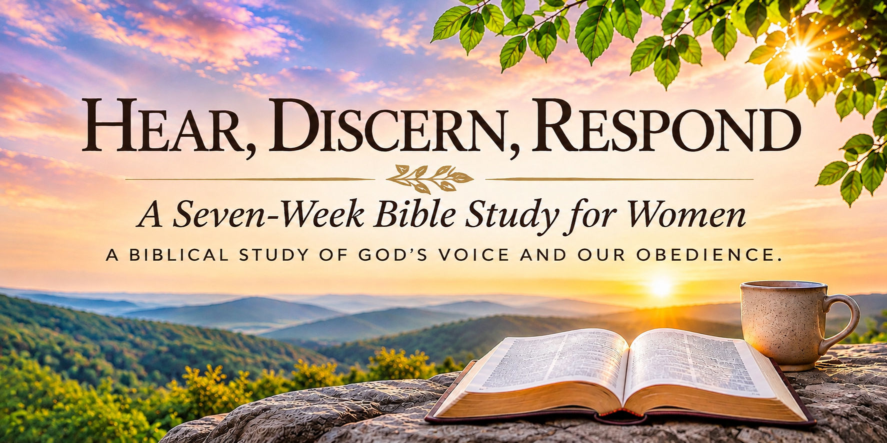
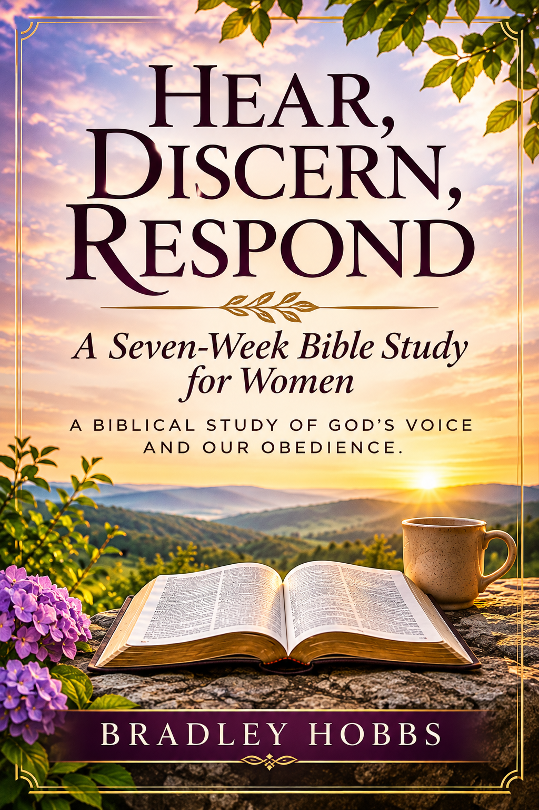

Learning to Recognize the Voice of God
God desires relationship with His people. Throughout Scripture, He speaks, leads, instructs, corrects, comforts, and calls His people into obedience. This study invites women to grow in their understanding of His voice and their confidence in responding biblically.
The Seven-Week Journey
How God Speaks
Understanding the Biblical Ways God Communicates
Week TwoRecognizing His Voice
Learning the Character of the Shepherd
Week ThreeThe Holy Ghost and Discernment
Guidance, conviction, wisdom, and direction
Week FourTesting What We Hear
Biblical discernment and spiritual confidence
Week FiveWhen Circumstances Speak
Recognizing God's leading through life's seasons
Week SixHearing God in the Waiting
Growing in patience, trust, and obedience
Week SevenResponding to the Voice of God
Following His voice with a willing and faithful heart
“My sheep hear My voice, and I know them, and they follow Me.”John 10:27

More Than Learning to Hear.
Learning to Discern. Learning to Trust. Learning to Respond.
Discerning the Voice of God invites women into a deeper walk with God through a focused, seven-week study of His voice and our obedience. Each week offers biblical truth, practical insight, and spiritual encouragement to help you grow in confidence, clarity, and a heart that responds in faith.
He Is Speaking. Are We Listening?
Come ready to grow in the Word, deepen your relationship with God, and learn to respond with confidence and obedience.
Begin Your Journey